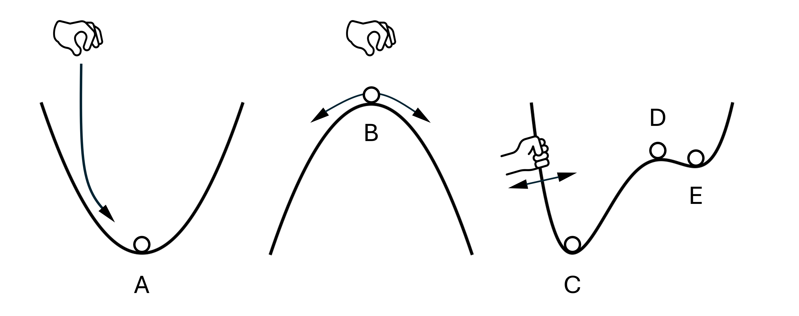

What is the difference between stability and resilience?
Many websites about stability and resilience offer very confusing descriptions, and quite often, mix up the two concepts. In this blogpost, I want to give you a metaphor that will help you decide when to use the concept of stability and when to add resilience. Spoiler: it is not either or!
Stability tells you whether a system can recover from a perturbation. If it can, it is stable, if not, it is unstable.
Resilience tells you the capacity of a system to recover from perturbations. If it can withstand large perturbations, it is more resilient, if it can withstand small perturbations, it is less resilient.
To illustrate, think of a ball dropped into a bowl (Figure, ball A). The ball will roll down the bowl and come to rest at the bottom of the bowl and remain steady. To test for stability, we can perturb the system by shaking the bowl. Due to gravity, the ball will recover and return to the bottom of the bowl. Hence, the bottom of the bowl is stable.

Now think of a ball carefull balanced on top of a hill (Figure, ball B). The ball will rest at the top of the hill and remain steady. Again, to test for stability, we can perturb the system by shaking the bowl. This time, however, due to gravity, the ball will not recover and rolls away from the top of the hill. Hence, the top of the hill is unstable.
To test for resilience, we can check how strongly we can shake the system before the balls do not return to their stable states. Typically we use the concept of resilience, to compare two stable states. The stable state of ball A (bottom of the hill) is obviously also resilient. This is inherent to every stable state, they all are resilient. However, they are not all equally resilient. Some bowls are deeper, requiring more shaking until the ball does not return to its equilibrium, and some bowls are flatter, requiring less shaking until the ball does not return to its equilibrium.
Contrary, the unstable state of ball B (top of the hill) is not resilient at all. This is inherent to every unstable state. Still, we could ask, how much "none-resilient" it is. Again, some hills are steeper, causing the ball to quickly move away from the unstable state after a perturbation, while others are flatter, causing the ball to move away more slowly.
So, resilience is a concept that can be added on top of the concept of stability. That being said, we typically only ask "how resilient" a stable state is, and not how "none-resilient" an unstable state is.
As a final example, let us look at the double-bowl system on the right of the figure above. The system has three steady states (C, D, and E) at which the ball remains steady if completely uninfluenced. Two of those steady states are stable and resilient (C and E), and one of those steady states is an unstable and not resilient (D). To test this, we can shake the whole system, and find that the ball in position C requiers heavier shaking (stable and more resilient) than the ball in position E (stable and less resilient) until it cannot return to its original position, while the ball D is leaving its position after even the smalles amount of shaking (unstable and not resilient).